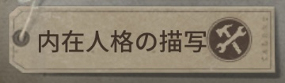

プロが採用している人格紹介
このページでは、プロプレイヤーが実際に採用している人格を紹介します。
ただし、今回は誰もが知っている王道の人格は省いています。
省いているサバイバー人格
起死回生、尻に火、ウェーバーの法則など
省いているハンター人格
破壊欲、怒り、封鎖、狂暴など
サバイバー編

感覚順応
ハンターに対しての粘着や、ハンターからの追跡を確認したりハンターから回りこまれていないかなどを確認する人格
採用サバイバー


共感
ダウン粘着、風船粘着サバイバーであれば素早く駆けつけることができる。救援職でも救助ルートを確保しやすい、また、危機一髪の効果が切れた後でも加速できるので解読へのよりも早くできる人格
採用サバイバー


共生効果
危機一髪採用で椅子前までの加速手段がない人なら全員採用しよう。危機一髪で救助職でないなら採用してもよい人格
採用サバイバー


防衛反応
負傷状態で板・窓両方の速度がアップするのが最強クラス。攻撃空振り後の窓乗り越え、板乗り越えを間に合わせたり、各ハンターのスキルに対して乗り越え後よけることができたりする。あまり身をもって感じることは少ないが意外と恩恵を受けている人格
採用サバイバー


癒合
治療速度が大幅に上昇する人格。チーム全体の耐久力を底上げし、長期戦に持ち込む戦略で重要です。治療を受ける速度を最速化し、チーム全体の生存率を大幅に向上させる人格
採用サバイバー


観客効果
解読速度が速くなる数少ない人格。また横にはピア効果もあるため5ptで採用できることもあり、つけ得である。また、初動チェイスが伸びなかった時の保険とても重要視される。
採用サバイバー


孵化効果
解読加速後から解読速度が上がる。3人盤面の立て直しや長期戦、アイテム補充や3人が追われない立ち回りなど長期戦にもっとも強くでれる人格
採用サバイバー


ピア効果
救助後、DDを狙ってくるハンターから遠ざかったり、救助後の一撃を遅らせたり。救助後にワンチャンスをもたらせる人格
採用サバイバー


ハンター編

幽閉の恐怖
引き分け担保：>4人通電されても幽閉の恐怖が発動し開門に大幅な時間がかかるためラスチェをはやめに終わらせれば、2人吊り、3人吊りが狙える！
3人盤面でも能力発揮：3人盤面からも幽閉の恐怖が発動するので3人吊りが見込みやすい
採用ハンター


中毒症
気絶状態に陥った時、即座に20メートル以内のサバイバーに3秒間持続する8～16％の減速効果を与える。ハンターとの距離が遠いほど減速値が上昇する。
ダブルチェイス、粘着サバイバーがいて、この試合はダブルチェイス、粘着で試合展開を潰されそうor選択したハンターが粘着に弱いなと思った時、確実に採用してください。スタン軽減も強いですが、意外と減速効果もトンネル対象を逃さないためにも強い性能になっている。
採用ハンター
 ＆
＆

パニック＆悪化
悪化:負傷状態のサバイバーの解読・治療・破壊の速度を5％低下させる。
万能採用人格。絶対この人格採用したいという人格がない時、こちらの2つを採用すると勝手に解読速度や治療速度などを下げてくれる人格
採用ハンター
中毒症
気絶状態に陥った時、即座に20メートル以内のサバイバーに3秒間持続する8～16％の減速効果を与える。ハンターとの距離が遠いほど減速値が上昇する。
ダブルチェイス、粘着サバイバーがいて、この試合はダブルチェイス、粘着で試合展開を潰されそうor選択したハンターが粘着に弱いなと思った時、確実に採用してください。スタン軽減も強いですが、意外と減速効果もトンネル対象を逃さないためにも強い性能になっている。
採用ハンター

懐旧癖
自身の32m範囲内でサバイバーがロケットチェアから救助されると救助されたサバイバーの位置を12秒間表示する。
また、自身と救助されたサバイバーの距離が12m以上離れている時、対象がいる方向へ移動している間は移動速度が最大10%増加し、距離が遠いほど移動速度は速くなる。効果時間中に対象がダウンダメージを受けると、効果は事前に終了する。
今の環境はDDの性能にたけたハンターが多いため、救助後のDDを狙うのに必須の人格。救助後の救助サバイバーをダウンを取りにいった後、移形やスキルでトンネル対象まで距離を詰めよう！あくまで12秒間なのでDDが取れなさそうと判断した場合はDDをあきらめることも大事！
採用ハンター


みんなのコメント